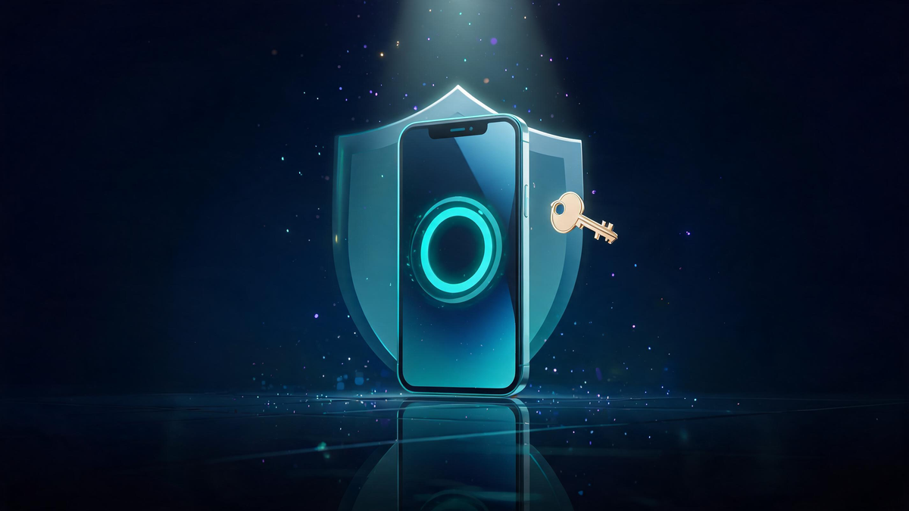

Samsung Password Manager Explained: Features, Safety & Alternatives

Quick answer
Samsung's password manager is Samsung Pass — a biometric-first manager built into every Galaxy device, with passwords and biometric data encrypted in the Knox Trust Zone at the hardware level. It's safe and convenient if you live in the Galaxy ecosystem — but it only autofills in Samsung Internet and Galaxy apps, with no desktop client or iOS support. Multi-device users are better served by Google Password Manager or Bitwarden.
In this guide
- What Is Samsung Pass?
- How It Works: Knox, Trust Zone & Biometrics
- Is Samsung Pass Safe?
- Samsung Pass vs Google Password Manager
- And vs Bitwarden?
- Exporting & Transferring: The Known Pain Point
- Troubleshooting: When Samsung Pass Stops Saving
- Passkeys: Where This Is All Heading
- Verdict: Who Should Use It
- FAQ
Key Takeaways
- Samsung Pass is Galaxy-exclusive: biometric sign-in for Samsung Internet and supported apps — not Chrome, not desktop.
- Security is genuinely strong: Knox Trust Zone encrypts credentials at the hardware level.
- Google Password Manager wins on cross-platform reach; Samsung Pass wins on Galaxy-only convenience.
- There's no one-tap export to Google — moving passwords takes manual work (Google's passkey import/export is easing this).
- Verdict: great for Galaxy-only users; a lock-in trap for everyone else.
Samsung Pass is the password manager hiding inside every Galaxy phone — biometric-first, hardware-protected by Knox, and genuinely secure, but locked to Samsung's ecosystem. Whether it's right for you depends on exactly one question: do all your devices have a Galaxy logo? This guide covers how it works, how safe it really is, how it compares to Google's manager, and the export problem nobody warns you about.
Confusion around Samsung Pass is understandable: Samsung's own pages dominate the search results, community forums hold the real answers, and the comparison with Google Password Manager gets argued endlessly on Reddit. This guide pulls the verified facts into one place — with the limitations stated as clearly as the strengths.
What Is Samsung Pass?
Samsung Pass is the built-in credential manager that ships with every Galaxy phone and tablet. Instead of typing passwords, you authenticate with your fingerprint, face scan or iris — the biometrics you already use to unlock the phone — and Samsung Pass fills in the saved login behind the scenes.
It covers three jobs: web logins (in Samsung Internet), app autofill (supported apps), and identity data like addresses and card details for faster checkout. It also supports passkeys — the FIDO-standard replacement for passwords — on recent One UI versions, which matters as the industry moves that direction.
The scope is the important part: Samsung Pass works in Samsung Internet and Galaxy-native apps — not Chrome, not Firefox, not desktop browsers. That single limitation drives most of the comparisons and complaints you'll find online.
How It Works: Knox, Trust Zone & Biometrics
The security architecture is the genuinely impressive part:
- You authenticate biometrically — fingerprint or face, never a typed master password.
- Knox validates at hardware level — the request is verified inside the device's secure enclave.
- Credentials decrypt from the Trust Zone — the isolated storage region where biometric data and secrets live, encrypted and walled off from the main OS.
- Autofill completes the login — in Samsung Internet or the supported app.
Because the secrets live in hardware, they never exist in a form the rest of the system can read — that's the core of the "is it safe?" answer below.
Is Samsung Pass Safe?
Yes — with one honest caveat that isn't about security at all. On the security side: biometric data and passwords are encrypted and stored inside the Trust Zone, protected by Samsung Knox, the same hardware-defense layer Samsung markets to enterprises. Knox guards against data leaks and unauthorized system-level access, and the biometric-first design means there's no master password to phish.
The caveat is scope, not safety: a manager that only works on Galaxy devices creates its own risk pattern. Users who drift to Chrome or a Windows laptop for convenience end up with passwords scattered across two systems — or worse, reusing passwords because the manager isn't there. The secure option you don't use consistently is less secure than the decent one you do.
Samsung Pass vs Google Password Manager
This is the comparison most Galaxy owners actually face, and the split is clean:
- Cross-platform: Google syncs everywhere — Android, iOS, Windows, Mac, every browser with your account. Samsung Pass stays on Galaxy hardware + Samsung Internet.
- Browser coverage: Google fills in Chrome; Samsung Pass fills in Samsung Internet (a Windows extension exists for select Galaxy Books).
- Security model: both are strong — Google uses account-level encryption and passkeys; Samsung uses hardware Knox and biometrics.
- Portability: Google wins decisively — passwords follow you to any new phone, Samsung or not. Leaving Samsung Pass means manual export work.
The deciding question isn't "which is more secure" — it's "how many non-Samsung devices do you touch daily?" One answer fits all.
And vs Bitwarden?
Bitwarden represents the third path: a dedicated, open-source manager that works everywhere and belongs to no ecosystem. It's audited, free, cross-platform, and gives you full export control — the three things Samsung Pass is weakest at.
The trade-off: Bitwarden adds an app to manage and a subscription if you want its premium features, while Samsung Pass and Google's manager are pre-installed and free. For security-conscious users with mixed devices, Bitwarden (or Proton Pass) is the power-user answer. For everyone else, the built-in options are genuinely good enough — and simpler.
Exporting & Transferring: The Known Pain Point
Here's the part the official pages don't emphasize: there is no one-tap "move everything to Google" button. Samsung Pass has historically offered limited export options, which turns any ecosystem exit into manual work — exactly why "can I transfer passwords from Samsung Pass to Google?" is a top question in every Galaxy forum.
The practical route in 2026: export or copy your logins where supported, import them into Google Password Manager (whose new passkey import and export support is making transitions easier), and then switch your default autofill provider in Android settings. Do it once, do it completely, and keep Samsung Pass installed-but-idle as a fallback until you're confident nothing was missed.
Troubleshooting: When Samsung Pass Stops Saving
The most common complaint — "why isn't it saving my passwords?" — almost always reduces to one of these:
- Wrong default provider: Samsung Pass only autofills when it's set as the system autofill service (Settings → General management → Passwords and autofill).
- Wrong browser: Chrome isn't covered — autofill happens in Samsung Internet. If you browse in Chrome, Samsung Pass has nothing to do.
- Banking apps: many financial apps block autofill by design, for security. That's the app's choice, not a Samsung Pass failure.
If all three check out and it still misbehaves, clearing Samsung Pass data (Settings → Apps → Samsung Pass → Storage) resets the service — with the obvious cost that you'll re-save recent logins.
Passkeys: Where This Is All Heading
The password-manager landscape is mid-transition. Passkeys — cryptographic sign-ins with no password to type or steal — are supported by Samsung Pass, Google Password Manager, and the major platforms, and Google's manager just added passkey import/export (the story that anchored this month's news cycle). Within a few years, "which password manager" may matter far less than "which passkey vault."
For now: whatever manager you use, enable its passkey support where offered. It's the same convenience with a fundamentally stronger security model — and it works even better inside Knox's hardware enclave.
Verdict: Who Should Use Samsung Pass
The answer splits cleanly by device reality:
Frequently Asked Questions
Is Samsung Pass safe to use?
Yes. Samsung Pass stores biometric data and passwords encrypted inside the device's Trust Zone, protected by Samsung Knox at the hardware level. The practical caveat is ecosystem lock-in: it works only on Galaxy devices and the Samsung Internet browser, not Chrome or desktop browsers.
Which is better, Samsung Pass or Google Password Manager?
Google Password Manager is the better fit for most people because it syncs across every platform — Android, iOS, Windows, Mac and Chrome. Samsung Pass is stronger on Galaxy-only devices with hardware-backed Knox security and biometric login, but it limits you to Samsung Internet and Galaxy hardware.
Can I transfer passwords from Samsung Pass to Google?
There is no direct one-tap export from Samsung Pass to Google Password Manager. The practical route is exporting or copying your logins, then importing them into Google's manager — and Google has been rolling out passkey import and export support that is easing this transition in 2026.
Do I need Samsung Pass on my Android phone?
Not necessarily. If you live inside the Galaxy ecosystem and prefer biometric sign-ins, Samsung Pass is convenient and secure. If you use Chrome, multiple devices or non-Samsung hardware, Google Password Manager or a dedicated manager like Bitwarden will serve you better.
What is the safest password manager for Android?
For most Android users: Google Password Manager (built-in, cross-platform, passkey support) or an open-source option like Bitwarden (audited, free, works everywhere). Samsung Pass is equally secure technically thanks to Knox, but its Galaxy-only scope makes it a niche choice rather than a universal one.
Why isn't Samsung Pass saving my passwords?
Common causes: Samsung Pass only autofills in Samsung Internet and supported apps — not Chrome; Samsung Internet must be set as the default autofill provider in Settings; and some banking apps block autofill by design. Check Settings → General management → Passwords and autofill to confirm the provider.
Keep Exploring
Keep exploring Veritya Daily's security coverage: manage your second factor with How to Turn Off 2FA Safely, build the foundation with Modern Cyber Security Solutions, see the industry's leaders in Top Cybersecurity Companies 2026, and start the career in Entry-Level Cybersecurity Jobs.
📚 Sources & Citations (10)
- Samsung — Samsung Pass official product pages (samsung.com, four listings in current SERP)
- Google AI Overview — Knox Trust Zone protection, biometric features, cross-platform comparison (retrieved October 16, 2026)
- YepAPI — Intent (10-keyword family), SERP (3 queries), Images SERP (2 queries) & News SERP data (October 16, 2026)
- AllThingsSecured — Is Samsung Pass Safe? Why You Should (& Shouldn't) Use It
- Reddit — r/Bitwarden & r/GalaxyS23Ultra community comparisons (2026)
- Samsung Community Forums — Transfer & vulnerability Q&A threads (EU/IN, 2026)
- TeamPassword — Samsung Password Manager: What Is Samsung Pass & Is It Safe
- Efani — Is Samsung Pass Secure? What It Protects (and Doesn't)
- Phandroid — Google Password Manager getting passkey import and export (2026)
- Veritya Daily — How to Turn Off Two-Factor Authentication Safely (companion guide)